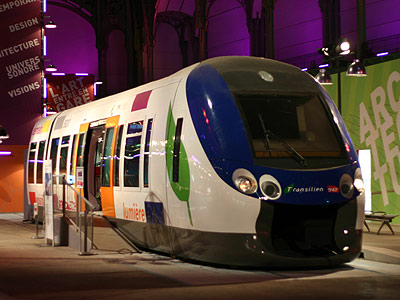
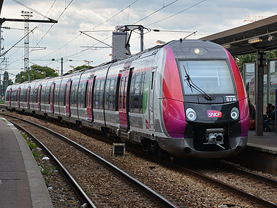
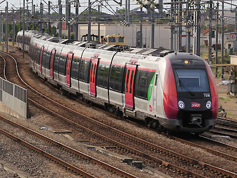
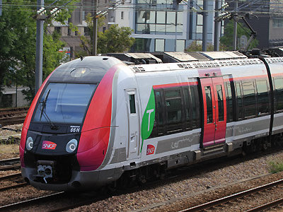
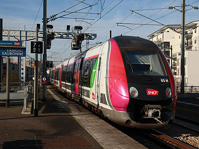
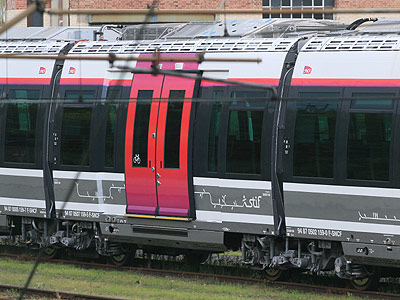
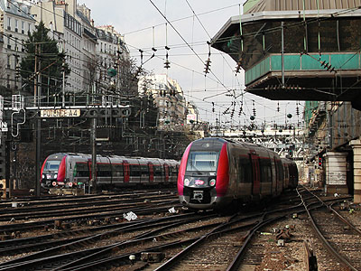
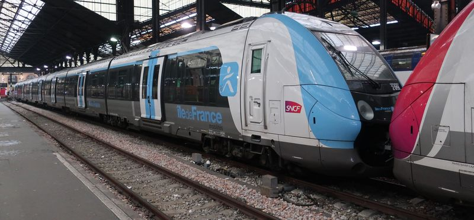

Les Z 50000 version Open Rails 
T. Stachnik et l'équipe des Compagnons du rail ont réalisé une collection de Z 50000.
Ferrovia - 05 Novembre 2015 - Mise à jour 20 Novembre 2018
Z 50000
Les NAT
Les Z 50000 sont des éléments automoteurs bicourants à un niveau conçus pour le service de banlieue parisienne. Ils étaient dénommés NAT (Nouvelle Automotrice Transilien) durant leur phase d'étude et ont été renommés "Francilien" suite à un sondage commandé par la région Ile-de-France. Ils ont été commandés à 172 exemplaires (commande ferme) auxquels s'ajoutent 200 en option (dont 141 étaient confirmés à la mi-2018) et sont en cours de construction dans l'usine Bombardier de Crespin (Nord) ex-Ateliers du Nord de la France.
Ces automotrices peuvent fonctionner en unités multiples entres elles et sont exploitées sur les réseaux Transilien de Paris Nord (ligne H), Est (ligne P) et St Lazare (lignes L et J) où elles remplacent les Z 6100 et les RIB
Les Z 50000 marquent un tournant technologique puisque la SNCF ne commandait que du matériel de banlieue à deux niveaux depuis trente ans. Les VB2N et Z2N, bien que très capacitaires, ont le défaut de présenter trop peu d'accès et d'allonger les temps d'attente en gare, ce qui nuit à la régularité. La structure des Z 50000 s'inpire à la fois des métro MP89 (intercirculation libre sur toute la longueur d'un élément) et des AGC (rame articulée). La caractéristique la plus innovante est la longueur réduite des caisses (13,26m) qui permet de les élargir à plus de trois mètres et proposer cinq places de front avec un confort inédit (largeur de 490 mm aux épaules et un accoudoir entre les sièges). Chaque caisse ne possède qu'une porte de 1,95m de largeur par face. Il n'y a donc pas plus d'accès que sur une Z2N. Mais ils sont plus régulièrement répartis et l'intercirculation libre entre les caisses ainsi que le plancher intégralement plat permettent des échanges plus rapides.
En 2017, les deux éléments 209L et 211L sont repelliculés aux nouveau nom et nouvelles couleurs de l'autorité de transports régionale, le STIF devenant "Ile-de-France Mobilités". La livrée n'est appliquée en usine qu'à partir de l'élément 226L, qui est le premier des 52 éléments commandés par la quatrième levée d'option, tous en configuration courte pour le réseau St Lazare.
Composition des rames
Une rame comporte huit caisses articulées. Les deux caisses extrêmes possédant un bogie motorisé et une cabine de conduite. De plus, trois bogies intermédiaires sont également motorisés. Pour tenir compte de l'exiguïté de Paris St Lazare, Les éléments affectées sur ce réseau sont réduits à sept caisses et la caisse centrale est raccourcie.
Quelques données techniques
Constructeur : Bombardier, nom catalogue : Spacium 3.06
Tension d'alimentation : continu 1,5 kV et monophasé 25 kV, 50 Hz
Chaîne de traction : onduleurs de courant - Moteur asynchrones
Motorisation : 2 moteurs par bogie, 5 bogies moteurs par élément.
Puissance totale : 2620 kW
Vitesse max en service : 140 km/h
Longueur : 112,50m (94,30m pour les éléments St Lazare)
Masse : 235t (210t pour les éléments St Lazare)
Prestations : climatisation, motorisation répartie, signal d'alarme désamorçable à distance, vidéosurveillance, système d'information aux voyageurs, architecture "BOA"
Sièges : 503 (rame courtes : 405)
Capacité debout (4 voyageurs/m²) 552 (rame courtes : 468)
Pour plus d'info :
La fiche Z 50000 sur Wikipedia
L'inventaire des Z 50000 sur Trains du Sud-Ouest
Dossier Z 50000 sur le blog Transportparis

Maquette de la NAT exposée au Grand Palais (06/01/2008)

Elément 02H en gare de St Denis (05/09/2015)

Elément 73H en approche d'Ermont-Eaubonne (08/08/2015)

Voiture pilote de l'élément 66H (Ermont-Eaubonne, 19/08/2015)

L'élément 05H quitte Ermont-Eaubonne (01/01/2015)

Caisse courte centrale de l'élément 80L (Bois-Colombes, 20/10/2013)

Rames 88L et 103L (Paris St Lazare, 13/02/2015)

L'élément 209L en livrée Ile-de-France Mobilités (06/02/2018)
Les Z 50000 version Open Rails 
T. Stachnik et l'équipe des Compagnons du rail ont réalisé une collection de Z 50000.